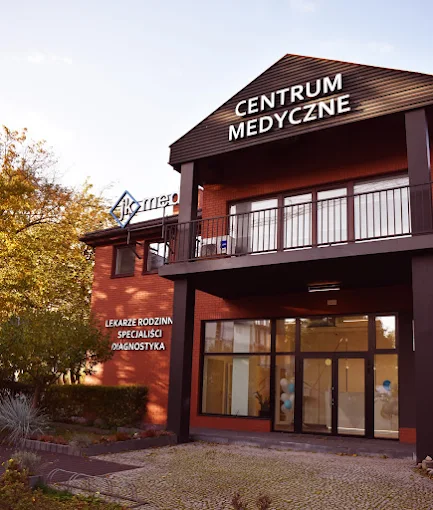

O nas
Biuro Inżynierskie Zorn świadczy usługi projektowe i doradcze dla klientów indywidualnych oraz firm. Naszym celem jest dostarczanie nowoczesnych i niezawodnych rozwiązań technicznych.
Dlaczego my?
- Doświadczenie w branży inżynieryjnej
- Indywidualne podejście do klienta
- Nowoczesne rozwiązania techniczne
- Kompleksowa obsługa od projektu po nadzór